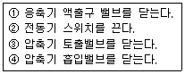
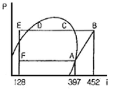
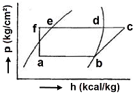
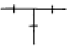
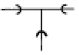
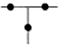
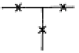

공조냉동기계기능사 (2010-03-28 기출문제)
1과목: 공조냉동안전관리
1. 다음 보기 중 암모니아 냉동장치 운전장치 운전을 정지하는 순서로 올바르게 나열한 것은?

- ①→②→④→③
- ①→④→②→③
- ③→④→①→②
- ③→①→②→④
(정답률: 55%)

2. 보일러 수위가 낮아지는 원인에 해당되지 않는 것은?
- 급수계통의 이상
- 분출계통의 누수
- 증발량의 감소
- 환수배관의 누수
(정답률: 83%)
3. 중량물을 운반하는 크레인 사용 시 하중을 초과할 경우 리미트스위치에 의해 권상을 정지시키는 방호장치는?
- 과부하 방지 장치
- 권과 방지 장치
- 비상 정지 장치
- 해지 장치
(정답률: 50%)
4. 재해의 직접적 원인이 아닌 것은?
- 복장, 보호구의 잘못 사용
- 불안전한 조작
- 구조, 재료의 부적합
- 안전장치의 기능제거
(정답률: 68%)
5. 전기설비의 방폭성능 기준 중 용기 내부에 보호구조를 압입하여 내부압력을 유지함으로써 가연성 가스가 용기 내부로 유입되지 아니하도록 한 구조를 말하는 것은?
- 내압방폭구조
- 유입방폭구조
- 압력방폭구조
- 안전증방폭구조
(정답률: 56%)
6. 아세틸렌 용접기에서 가스가 새어나오는 경우에 검사하는 방법으로 적당한 것은?
- 냄새를 맡아 검사한다.
- 모래를 뿌려 검사한다.
- 비눗물을 칠해 검사한다.
- 성냥불을 가져다가 검사한다.
(정답률: 91%)
7. 작업자의 신체를 보호하기 위한 보호구의 구비조건으로 가장 거리가 먼 것은?
- 착용이 간편할 것
- 방호성능이 충분한 것일 것
- 정비가 간단하고 점검, 검사가 용이할 것
- 견고하고 값비싼 고급 품질일 것
(정답률: 92%)
8. 안전표시를 하는 목적이 아닌 것은?
- 작업환경을 통제하여 예상되는 재해를 사전에 예방
- 시각적 자극으로 주의력을 키움
- 불안전한 행동을 배제하고 재해를 예방함
- 사업장의 경계를 구분하기 위해 실시함
(정답률: 89%)
9. 가연성 냉매가스 중 냉매설비의 전기설비를 방폭구조로 하지 않아도 되는 것은?
- 암모니아
- 노말부탄
- 메탄
- 염화메탄
(정답률: 83%)
10. 줄 작업 시 안전관리 사항으로 틀린 것은?
- 손잡이가 줄에 튼튼하게 고정되어 있는가 확인한 다음에 사용한다.
- 줄 작업의 높이는 작업자의 눈높이로 하는 것이 좋다.
- 칩은 브러시로 제거한다.
- 줄의 균열 유무를 확인한다.
(정답률: 89%)
11. 가연물의 구비조건에 해당되지 않는 것은?
- 연소열이 많을 것
- 열전도율이 클 것
- 산화되기 쉬울 것
- 건조도가 양호할 것
(정답률: 55%)
12. 작업조건의 적합한 내용과 보호구와의 연계가 올바르지 못한 것은?
- 높이 또는 깊이 1m 이상의 추락할 위험이 있는 장소에서의 작업 : 안전대
- 물체의 낙하·충격, 물체의 끼임, 감전 또는 정전기의 대전에 의한 위험이 있는 작업 : 안전화
- 물체가 떨어지거나 날아올 위험 또는 근로자가 감전되거나 추락할 위험이 있는 작업 : 안전모
- 용접 시 불꽃 또는 물체가 날아 흩어질 위험이 있는 작업 : 보안면
(정답률: 65%)
13. 수공구 사용 시 주의사항으로 틀린 것은?
- 사용 전에 이상 유무를 확인한다.
- 작업에 적합하지 않아도 유사한 것을 사용할 수 있다.
- 충분한 사용법을 숙지하고 사용하도록 한다.
- 공구를 사용하고 나면 일정한 장소에 보관한다.
(정답률: 92%)
14. 산소가 결핍되어 있는 장소에서 사용하는 마스크는?
- 송기 마스크
- 방진 마스크
- 방독 마스크
- 격리식 방진 마스크
(정답률: 88%)
15. 접지공사의 목적으로 가장 올바른 것은?
- 전류변동방지, 전압변동방지, 절연저하방지
- 절연저하방지, 화재방지, 전압변동방지
- 화재방지, 감전방지, 기기손상방지
- 감전방지, 전압변동방지, 화재방지
(정답률: 76%)
2과목: 냉동기계
16. 압축기의 압축비가 커지면 어떤 현상이 일어나는가?
- 압축비가 커지면 체적효율이 증가한다.
- 압축비가 커지면 체적효율이 저하한다.
- 압축비가 커지면 소요동력이 작아진다.
- 압축비와 체적효율은 아무런 관계가 없다.
(정답률: 60%)
17. 동관의 납땜 이음 시 이음쇠와 동관의 틈새는 몇 ㎜ 정도가 가장 적당한가?
- 0.04 ~ 0.2
- 0.5 ~ 1.0
- 1.2 ~ 1.8
- 2.0 ~ 3.5
(정답률: 64%)
18. 1분간에 25℃의 순수한 물 40ℓ를 5℃로 냉각하기 위한 냉각기의 냉동능력은 약 몇 냉동톤인가?
- 0.24(RT)
- 14.45(RT)
- 241(RT)
- 14458(RT)
(정답률: 65%)
19. 증발기에 대한 설명 중 옳은 것은?
- 증발기에 많은 성에가 끼는 것은 냉동 능력에 영향을 주지 않는다.
- 직접 팽창식보다 간접 팽창식 증발기가 RT당 냉매 충전량이 적다.
- 만액식 증발기에서 냉매 측의 전열을 좋게 하기 위한 방법으로는 관경을 크고 관 간격을 넓게 하는 방법이 있다.
- 액순환식의 증발기에서는 냉매액만이 흐르고 냉매증기는 전혀 없다.
(정답률: 56%)
20. 냉동기용 윤활유로서 필요조건에 해당되지 않는 것은?
- 냉매와 친화반응을 일으키지 않을 것
- 열 안전성이 좋을 것
- 응고점이 낮을 것
- 유막 강도가 작을 것
(정답률: 62%)
21. 온도작동식 자동팽창 밸브에 대한 설명으로 옳은 것은?
- 실온을 써모스탯에 의하여 감지하고, 밸브의 개도를 조정한다.
- 팽창밸브 직전의 냉매온도에 의하여 자동적으로 개도를 조정한다.
- 증발기 출구의 냉매온도에 의하여 자동적으로 개도를 조정한다.
- 압축기의 토출 냉매온도에 의하여 자동적으로 개도를 조정한다.
(정답률: 63%)
22. 얼음 두께를 t, 브라인 온도를 tb라 할 때 결빙시간의 산정식으로 맞는 것은?
- (0.56×t2) / tb = 결빙시간
- (0.56×tb) / t2 = 결빙시간
- (0.56×t2) / -tb = 결빙시간
- (0.56×tb) / -t2 = 결빙시간
(정답률: 54%)
23. 2원 냉동장치에 사용하는 저온측 냉매로서 옳은 것은?
- R-717
- R-718
- R-14
- R-22
(정답률: 64%)
24. 주철관을 직선으로 연결하는 접속법은?
- 티(tee)이음
- 소켓(socket)이음
- 크로스(cross)이음
- 벤드(bend)이음
(정답률: 71%)
25. 프레온 냉동장치에서 유분리기를 설치하는 경우로 틀린 것은?
- 만액식 증발기를 사용하는 장치의 경우
- 증발온도가 높은 저온장치의 경우
- 토출가스 배관이 길어진다고 생각되는 경우
- 토출가스에 다량의 오일이 섞여 나간다고 생각되는 경우
(정답률: 46%)
26. 불연속 제어에 속하는 것은?
- ON-OFF 제어
- 비례 제어
- 미분 제어
- 적분 제어
(정답률: 87%)
27. 전기장의 세기를 나타내는 것은?
- 유전속 밀도
- 전하 밀도
- 정전력
- 전기력선 밀도
(정답률: 77%)
28. 터보 냉동기 윤활 사이클에서 마그네틱 플러그가 하는 역할은?
- 오일 쿨러의 냉각수 온도를 일정하게 유지하는 역할
- 오일 중의 수분을 제거하는 역할
- 윤활 사이클로 공급되는 유압을 일정하게 하여 주는 역할
- 윤활 사이클로 공급되는 철분을 제거하여 장치의 마모를 방지하는 역할
(정답률: 78%)
29. 다음 물리엘 선도에서의 성적계수는 약 얼마인가?

- 2.4
- 4.9
- 5.4
- 6.3
(정답률: 70%)
30. 증기 압축식 냉동장치의 냉동원리에 해당되는 것은?
- 증기의 팽창열을 이용한다.
- 액체의 증발잠열을 이용한다.
- 고체의 승화열을 이용한다.
- 기체의 온도차에 의한 현열변화를 이용한다.
(정답률: 55%)
31. 증발온도가 다른 2개의 증발기에서 발생하는 냉매가스를 압축하는 다효 압축 시 저압 흡입구는 어디에 연결되어 있는가?
- 피스톤 상부
- 피스톤 행정 최하단 실린더 벽
- 피스톤 하부
- 피스톤 행정 중간 실린더 벽
(정답률: 63%)
32. 전압계의 측정범위를 넓히기 위해서 사용되는 것은?
- 분류기
- 휘스톤브리지
- 배율기
- 변압기
(정답률: 67%)
33. 증발식 응축기에 관한 사항 중 옳은 것은?
- 외기의 건구온도 영향을 많이 받는다.
- 냉각수의 현열을 이용하여 냉매가스를 응축시킨다.
- 펌프(pump), 팬(fan), 노즐(nozzle) 등의 부속설비가 많다.
- 냉각관내 냉매의 압력강하가 작다.
(정답률: 55%)
34. 유기질 브라인으로서 마취성과 인화성이 있고, -100℃ 정도의 식품 초저온 동결에 사용되는 것은?
- 에틸알콜
- 염화칼슘
- 에틸렌글리클
- 염화나트륨
(정답률: 51%)
35. 전자 밸브를 작동시켜 주는 원리는?
- 냉매 압력
- 영구 자석의 철심의 힘
- 전류에 의한 자기 작용
- 전자 밸브 내의 소형 전동기
(정답률: 75%)
36. 프레온 냉매(할로겐화 탄화수소)의 호칭기호 결정과 관계없는 성분은?
- 수소
- 탄소
- 산소
- 불소
(정답률: 72%)
37. 펌프의 캐비테이션 방지책으로 잘못된 것은?
- 양흡입 펌프를 사용한다.
- 펌프의 회전차를 수중에 완전히 잠기게 한다.
- 펌프의 설치 위치를 낮춘다.
- 펌프 회전수를 빠르게 한다.
(정답률: 79%)
38. 역카르노 사이클에 대한 설명 중 옳은 것은?
- 2개의 압축과정과 2개의 증발과정으로 이루어져 있다.
- 2개의 압축과정과 2개의 응축과정으로 이루어져 있다.
- 2개의 단열과정과 2개의 등온과정으로 이루어져 있다.
- 2개의 증발과정과 2개의 응축과정으로 이루어져 있다.
(정답률: 83%)
39. 열용량을 나타내는 식으로 맞는 것은?
- 물질의 부피 × 밀도
- 물질의 무게 × 비열
- 물질의 부피 × 비열
- 물질의 무게 × 밀도
(정답률: 58%)
40. 압축방식에 의한 분류 중 체적 압축식 압축기가 아닌 것은?
- 왕복동식 압축기
- 회전식 압축기
- 스크류식 압축기
- 흡수식 압축기
(정답률: 75%)
41. 보온재 중 사용온도 범위가 가장 낮은 것은?
- 폴리에틸렌 폼
- 암면
- 세라믹 화이버
- 규산칼슘
(정답률: 59%)
42. 다음 p→h 선도상의 (f→a)변화과정에 대한 설명으로 맞는 것은?

- 압력 상승
- 온도 상승
- 엔탈피 불변
- 비체적 감소
(정답률: 63%)
43. 흡수식 냉동기에 사용되는 흡수제의 구비조건으로 맞지 않는 것은?
- 용액의 증기압이 낮을 것
- 농도변화에 의한 증기압의 변화가 클 것
- 재생에 많은 열량을 필요로 하지 않을 것
- 점도가 높지 않을 것
(정답률: 73%)
44. 일반 접합의 티이(Tee)를 나타낸 것은?




(정답률: 83%)
45. 열펌프(Heat Pump)의 구성요소가 아닌 것은?
- 압축기
- 열교환기
- 4방 밸브
- 보조 냉방기
(정답률: 67%)
3과목: 공기조화
46. 대기압 하에서 100℃의 포화수를 100℃의 건포화증기로 만들 수 있는 보일러의 증발량은?
- 상당 증발량
- 실제 증발량
- 정미 증발량
- 보일러 증발량
(정답률: 69%)
47. 송풍량이 360m3/min인 팬을 540m3/min로 송풍하려면 회전수와 동력은 각각 약 몇 배로 증가되는가?
- 회전수 : 1.5배, 동력 : 3.4배
- 회전수 : 1.0배, 동력 : 1.5배
- 회전수 : 1.0배, 동력 : 3.4배
- 회전수 : 1.5배, 동력 : 1.5배
(정답률: 59%)
48. 습공기의 상태변화에 관한 설명으로 옳은 것은?
- 습공기를 가열하면 절대습도는 상승한다.
- 습공기를 가습하면 상대습도는 상승한다.
- 습공기를 냉각시키면 건구온도는 저하하고, 상대습도는 상승한다.
- 습공기를 가열하여 그 온도를 상승시키면 상대습도는 상승한다.
(정답률: 53%)
49. 현열교환기에 대한 설명으로 잘못된 것은?
- 보건 공조용으로 사용한다.
- 연도배기 가스의 열회수용으로 사용한다.
- 회전형과 히트파이프가 있다.
- 산업용 공조에 주로 사용한다.
(정답률: 61%)
50. 지름 50㎝인 덕트 내의 풍속이 7.5m/sec 일 때 풍량은 약 몇 m3/h인가?
- 3750
- 5300
- 8960
- 9650
(정답률: 40%)
51. 팬코일 유니트 방식을 채용하는 이유로 부적당한 것은?
- 개별제어가 쉽다.
- 환기량 확보가 쉽다.
- 운송 동력이 적게 소요된다.
- 중앙 기계실의 면적을 줄일 수 있다.
(정답률: 43%)
52. 가습기 중 응답성이 빠르고 제어성이 좋아 많이 사용하며 물의 정체성이 없어 미생물의 번식이 없는 것은?(오류 신고가 접수된 문제입니다. 반드시 정답과 해설을 확인하시기 바랍니다.)
- 원심형가습기
- 팬형가습기
- 증기가습기
- 모세관형가습기
(정답률: 52%)
53. 공기조화기의 송풍의의 축동력을 산출할 때 필요한 값과 거리가 먼 것은?
- 송풍량
- 현열비
- 송풍기 전압효율
- 송풍기 전압
(정답률: 64%)
54. 주철제 방열기의 종류가 아닌 것은?
- 2주형
- 3주형
- 4세주형
- 5세주형
(정답률: 73%)
55. 독립계통으로 운전이 자유롭고 냉수 배관이나 복잡한 덕트 등이 없기 때문에 소규모 상점이나 사무실 등에서 사용되는 경제적인 공조 방식은?
- 중앙식 공기 방식
- 팬코일 유닛 공조 방식
- AHU 공조 방식
- 패키지 유닛 공조 방식
(정답률: 72%)
56. 인체의 신진대사량과 방열량과의 관계에 대한 다음 설명 중 옳지 않은 것은?
- 신진대사량 = 전체 방열량인 경우 체온은 일정하다.
- 신진대사량 > 전체 방열량 경우 더위를 느낀다.
- 신진대사량 < 전체 방열량 경우 추위를 느낀다.
- 신진대사량과 전체 방열량은 어떠한 관계도 없다.
(정답률: 74%)
57. 온수난방의 특징 설명으로 틀린 것은?
- 장치의 열용량이 크므로 예열시간이 길다.
- 배관 열손실이 적고, 연료의 소비량이 적다.
- 온수용 주철 보일러는 수두 제한 때문에 고층에서는 사용할 수 없다.
- 트랩이나 기구장치 등이 필요하다.
(정답률: 42%)
58. 냉방부하의 종류 중 실내부하에 해당하는 것은?
- 문틈에서의 틈새바람
- 환기덕트, 배관에서의 손실
- 펌프의 동력열
- 외기부하
(정답률: 62%)
59. 덕트설비에 사용되는 댐퍼의 용도를 나타낸 것이다. 옳지 않는 것은?
- 버터플라이 댐퍼 – 대형 덕트의 개폐용
- 볼륨 댐퍼 – 덕트의 풍량 조절용
- 스플릿 댐퍼 – 분기부의 풍량 배분용
- 방화 댐퍼 – 화재 시 화염의 침입방지용
(정답률: 61%)
60. 증기배관의 말단이나 방열기 환수구에 설치하여 증기관이나 방열기에서 발생한 응축수 및 공기를 배출하여 수격작용 및 배관의 부식을 방지하는 장치는?
- 공기빼기밸브(AAV)
- 신축이음(EXP)
- 증기트랩(ST)
- 팽창탱크(ET)
(정답률: 66%)
① 냉동기 출구 밸브를 닫습니다. (냉매 유입을 차단)
④ 냉각수 밸브를 닫습니다. (냉각수 유입을 차단)
② 냉매 압축기 전원을 차단합니다. (냉매 압축을 중지)
③ 냉매 유출 방지를 위해 냉각수를 계속 유입합니다. (냉매가 냉각되어 압력이 낮아지도록 함)
따라서, 정답은 "①→④→②→③" 입니다.